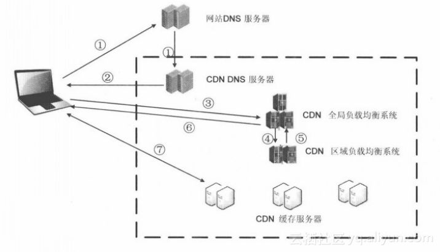

什么是 CDN
CDN 是将源站内容分发至最接近用户的节点，使用户可就近取得所需内容，提高用户访问的响应速度和成功率。解决因分布、带宽、服务器性能带来的访问延迟问题，适用于站点加速、点播、直播等场景。
关于 CDN 的一些常见名词
- Origin Server（源站）：做 CDN 之前的客户真正的服务器
- Last Mile（最后一公里）：也就是网民到他所访问到的 CDN 服务器之间的路径
- CNAME记录（别名记录）：当 DNS 系统在查询 CNAME 左面的名称的时候，都会转向 CNAME 右面的名称再进行查询，一直追踪到最后的 PTR 或 A 名称，成功查询后才会做出回应，否则失败。
- CNAME域名：CDN的域名加速需要用到CNAME记录，假如在阿里云控制台配置完成CDN加速后，你会得到一个加速后的域名，称之为CNAME域名（该域名一定是 http://kunlun.com）， 用户需要将自己的域名作CNAME指向这个 http://kunlun.com 的域名后，域名解析的工作就正式转向阿里云，该域名所有的请求都将转向阿里云 CDN 的节点。
- 边缘节点（CDN 节点、Cache 节点）：指距离最终用户接入具有较少的中间环节的网络节点，对最终接入用户有较好的响应能力和连接速度。其作用是将访问量较大的网页内容和对象保存在服务器前端的专用 cache 设备上，以此来提高网站访问的速度和质量。
- cache（cache高速缓冲存储器）：是一种特殊的存储器子系统，其中复制了频繁使用的数据以利于快速访问。存储器的高速缓冲存储器存储了频繁访问的 RAM 位置的内容以及这些数据项的存储地址。当处理器引用存储器中的某地址时，高速缓冲存储器便检查是否存有该地址。如果存有该地址，则将数据返回处理器；如果没有保存该地址，则进行常规的存储器访问。因为高速缓冲存储器总是比主RAM存储器速度快，所以当RAM的访问速度低于微处理器的速度时，常使用高速缓冲存储器。
CDN 加速（工作）原理
最简单的 CDN 网络由一个 DNS 服务器和几台缓存服务器组成（如下图所示）：

- 当用户输入 URL，经过本地 DNS 系统解析，DNS 系统会最终将域名的解析权交给 CNAME 指向的 CDN 专用 DNS 服务器。
- CDN 的 DNS 服务器将 CDN 的全局负载均衡设备 IP 地址返回用户。
- 用户向 CDN 的全局负载均衡设备发起访问请求。
- CDN 全局负载均衡设备根据用户 IP 地址，以及用户请求的 URL，选择一台用户所属区域的区域负载均衡设备，告诉用户向这台设备发起请求。
- 区域负载均衡设备会为用户选择一台合适的缓存服务器提供服务，选择的依据包括：根据用户 IP 地址，判断哪一台服务器距用户最近；根据用户所请求的 URL 中携带的内容名称，判断哪一台服务器上有用户所需内容；查询各个服务器当前的负载情况，判断哪一台服务器尚有服务能力。基于以上这些条件的综合分析之后，区域负载均衡设备会向全局负载均衡设备返回一台缓存服务器的 IP 地址。
- 全局负载均衡设备把服务器的 IP 地址返回给用户。
- 用户向缓存服务器发起请求，缓存服务器响应用户请求，将用户所需内容传送到用户终端。如果这台缓存服务器上并没有用户想要的内容，而区域均衡设备依然将它分配给了用户，那么这台服务器就要向它的上一级缓存服务器请求内容，直至追溯到网站的源服务器将内容拉到本地。
使用 CDN 的适用场景
- 网站站点/应用加速：站点或者应用中大量静态资源的加速分发，建议将站点内容进行动静分离，动态文件可以结合云服务器 ECS，静态资源如各类型图片、html、css、js文件等，建议结合对象存储 OSS 存储海量静态资源，可以有效加速内容加载速度
- 视音频点播/大文件下载分发加速：mp4、flv 视频文件或者平均单个文件大小在 20M 以上，主要的业务场景是视音频点播、大文件下载（如安装包下载）等，建议搭配对象存储 OSS 使用，可提升回源速度，节约近 2/3 回源带宽成本
- 移动应用加速：移动 APP 更新文件（apk文件）分发，移动 APP 内图片、页面、短视频、UGC 等内容的优化加速分发。提供 httpDNS 服务，避免 DNS 劫持并获得实时精确的 DNS 解析结果，有效缩短用户访问时间，提升用户体验。